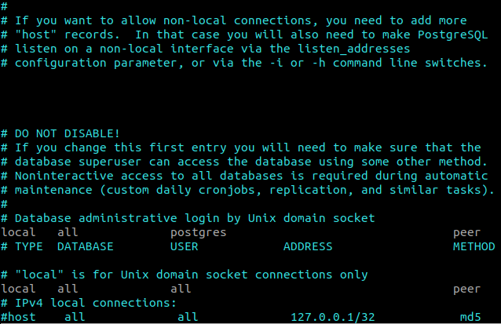

Instalación de Airflow en Ubuntu
Publicado el dom 02 mayo 2021 en Tutorial de Linux • 2 min de lectura
Este proceso de instalación se hace desde Ubuntu usando anaconda.
Este artículo se basa de un artículo en inglés Apache Airflow Installation on Ubuntu y la página oficial de Airflow.
Preparación
1. Actualización de pip:
Lo primero que se hará es actualizar pip:
pip install --upgrade pip
2. Instalación de la base de datos postgreSQL:
El proceso de instalación es a lo Debian:
sudo apt-get install postgresql postgresql-contrib
3. Creación de una base de datos para Airflow
- Creación de un usuario airflow:
sudo adduser airflow
Añadiendo el usuario `airflow' ...
Añadiendo el nuevo grupo `airflow' (1004) ...
Añadiendo el nuevo usuario `airflow' (1003) con grupo `airflow' ...
Creando el directorio personal `/home/airflow' ...
Copiando los ficheros desde `/etc/skel' ...
Nueva contraseña:
Vuelva a escribir la nueva contraseña:
passwd: contraseña actualizada correctamente
Cambiando la información de usuario para airflow
Introduzca el nuevo valor, o presione INTRO para el predeterminado
Nombre completo []:
Número de habitación []:
Teléfono del trabajo []:
Teléfono de casa []:
Otro []:
¿Es correcta la información? [S/n] s
- Agregar el usuario airflow al grupo
sudo usermod -aG sudo airflow
- Se cambia al shell del usuario airflow
su - airflow
- Se cambia al usuario postgres para crear un role para airflow
sudo -u postgres psql
Salida es:
[sudo] contraseña para airflow:
Lo sentimos, vuelva a intentarlo.
[sudo] contraseña para airflow:
psql (12.6 (Ubuntu 12.6-0ubuntu0.20.04.1))
Type "help" for help.
postgres=#
- Crear el usuario para airflow:
CREATE USER airflow PASSWORD 'a1rfl0w';
CREATE ROLE
CREATE DATABASE airflow;
GRANT ALL PRIVILEGES ON ALL TABLES IN SCHEMA public TO airflow
- Verificar que la base de datos existe:
psql -d airflow -h localhost -U airflow
psql (12.3, server 12.6 (Ubuntu 12.6-0ubuntu0.20.04.1))
SSL connection (protocol: TLSv1.3, cipher: TLS_AES_256_GCM_SHA384, bits: 256, compression: off)
Type "help" for help.
airflow=> \conninfo
You are connected to database "airflow" as user "airflow" on host "localhost" (address "127.0.0.1") at port "5432".
SSL connection (protocol: TLSv1.3, cipher: TLS_AES_256_GCM_SHA384, bits: 256, compression: off)
- Configurar pg_hba.conf:
sudo vim /etc/postgresql/12/main/pg_hba.conf

Cambiar a 0.0.0.0/0 y el método IPv4 a trust:
# IPv4 local connections:
host all all 0.0.0.0/0 trust
- Reiniciar postgresql:
sudo service postgresql restart
Instalación de airflow
- Configurar el home de airflow:
export AIRFLOW_HOME=~/airflow
- Instalar airflow con varios componentes:
pip install "apache-airflow[async,postgres,google,celery,rabbitmq,docker,amazon]"
- Iniciar base de datos de airflow:
airflow initdb
El comando generará un archivo airflow.cfg en el directorio home del usuario airflow.
- Configurar airflow.cfg
Agregar el executor en este caso se usará celery:
executor = CeleryExecutor
- Se crean las tablas en la base de datos al configurar airflow.cfg:
sql_alchemy_conn = postgresql+psycopg2://airflow@localhost:5432/airflow
Salvar y se ejecuta airflow initdb.
- Deshabilitando ejemplos:
Se edita airflow.cfg:
load_examples = False
- Iniciar el servidor web de Airflow:
airflow webserver
Para acceder a la aplicación web se abre https://localhost:8080 .
Se muestra una captura de pantalla del servidor:

En próximos artículos se mostrará tutoriales sobre airflow.
¡Haz tu donativo! Si te gustó el artículo puedes realizar un donativo con Bitcoin (BTC) usando la billetera digital de tu preferencia a la siguiente dirección: 17MtNybhdkA9GV3UNS6BTwPcuhjXoPrSzV
O Escaneando el código QR desde la billetera: